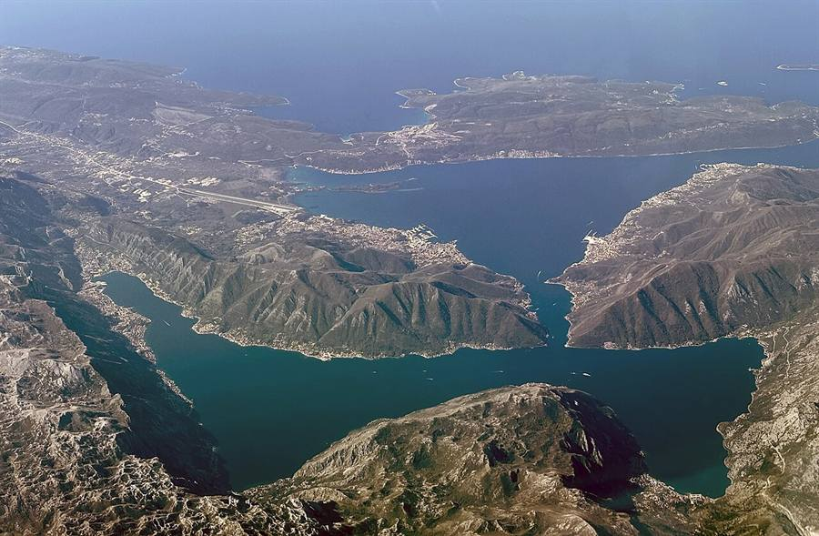
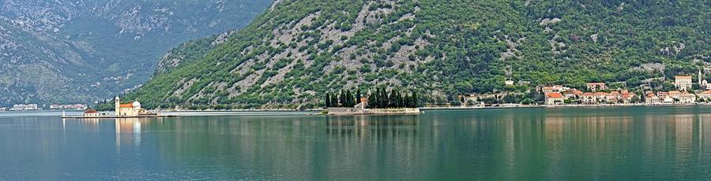

Bay of Kotor Guide 2026: Kotor, Perast, Our Lady of the Rocks & Herceg Novi
The Bay of Kotor is a winding inlet of the Adriatic in southwestern Montenegro, sometimes called Europe's southernmost fjord (it is technically a flooded river valley). Three inner bays — Risan, Kotor, Tivat — wrapped by mountains that drop straight into deep water. The whole region is a UNESCO World Heritage Site, twice over: as a cultural and natural landscape, and as part of the Venetian Works of Defence. This is the field guide to its four most-visited towns and how to enjoy them without the cruise-ship crowd.

Kotor old town: what to actually see
Kotor is best between 17:00 and 23:00. By day, three or four cruise ships can unload thousands of visitors into the narrow stone alleys. By evening it empties and the city becomes itself again — cats, hidden courtyards, the bells of St Tryphon Cathedral (built 1166), worn stone staircases, and mountains rising literally above the rooftops.
- St Tryphon Cathedral (Katedrala Svetog Tripuna) — Romanesque, founded 1166. Inside: a 14th-century gilded altar canopy and relics. €4.
- St Luke's Church (Crkva Svetog Luke) — small, intimate, used by both Orthodox and Catholic communities. Free.
- Maritime Museum (Pomorski muzej) — model ships, naval uniforms, the story of the Boka Navy. €4.
- The cats of Kotor — yes, a real thing. There is a small Cats Museum and a Cats Square. The whole town is overrun in the best possible way.
- The Arms Square (Trg od oružja) — main square, clock tower, café tables.
The Kotor fortress walk — is it worth it?
Yes — with timing. The walls climb 4.5 km up the cliff to San Giovanni fortress at 260 m, 1200 stone steps. €8 entry from May through October. The view halfway up is the postcard. The top is for completionists. Do it at sunrise or after 17:00. Never in midday heat — people pass out every summer. Carry 1.5 litres of water minimum. Wear shoes with grip.
Perast: the baroque dream

A small baroque town built on Venetian maritime wealth. No cars in the centre. Palazzi from the 17th century, two churches, a stone waterfront, and the famous two islets just offshore. One of the quietest, most cinematic places on the whole coast.
- Walk the entire waterfront promenade (10 minutes end to end).
- Coffee at Cafe del Capitano.
- Climb the bell tower of St Nicholas (Crkva Svetog Nikole) — €2 for the dizzying view.
- Boat to Our Lady of the Rocks — €5 return, every 15 minutes in summer.
- Lunch with a sea view at Conte, Otsaj, or Hotel Conte's terrace.
Our Lady of the Rocks (Gospa od Škrpjela)
One of two islets off Perast (the other, Sveti Đorđe, is private and not visitable). Built over centuries by local seamen who, according to legend, made an oath after finding the icon of the Madonna on a rock in 1452. They kept dropping stones and sinking captured ships there until the islet appeared.
- Inside the church: 68 paintings by 17th-century artist Tripo Kokolja, the original icon of the Madonna, and a famous tapestry made from the hair of a sailor's wife who waited 25 years for him.
- Practical: boat from Perast every 15 min, €5 return. Church admission €1.50. Small museum and gift shop on the islet. About one hour for the full visit.
- One date to know: Fašinada, 22 July 2026. Local men row out at sunset to throw new rocks at the islet, continuing the tradition. Beautiful, very local, not staged for tourists.
Herceg Novi — the green, vertical city
A greener, slower bay town with a real lived-in feel. Built up the hillside in vertical layers — locals call it "the city of a thousand-and-one stairs". Two fortresses (Spanish above, Forte Mare at the water). A waterfront promenade (Pet Danica) running 7 km toward Igalo. Famous for the Mimosa Festival in February. About 50 minutes from Tivat, 35 minutes from Kotor.
Bay of Kotor boat tours — verified 2026 prices
The classic Boka boat day combines the Blue Cave, the Cold War submarine tunnels at Mamula, and Our Lady of the Rocks. Verified pricing from Boat Taxi Kotor for 2026 (private boats, up to 8 guests, cash on the day, no deposit):
| Route | Duration | Per boat | Per person (4 pax) |
|---|---|---|---|
| Perast & Our Lady of the Rocks | 2 h | €150 | €37 |
| Blue Cave adventure | 3 h | €320 | €80 |
| Beach + Cave (Žanjic 1 h) | 5 h | €400 | €100 |
| Full Bay Discovery | 6 h | €480 | €120 |
Group speedboat tours from GetYourGuide or Viator cost €40–60 per person for the 3 h Blue Cave route but use 25-seat boats with fixed schedules.
When to visit the Bay of Kotor
- Late May to mid-June — best balance: warm sea (20°C+), low crowds, full restaurant schedule.
- September — same balance, slightly warmer water, school holidays over.
- July–August — peak heat, peak crowds, peak cruise traffic. Book accommodation 2–3 months ahead.
- October to April — quiet, atmospheric, some restaurants closed, the bay can be moody and beautiful.
How to get to the Bay of Kotor
- By air: Tivat Airport (TIV) is inside the bay, 20 min from Kotor. Podgorica Airport (TGD) is 1 h 30 from Kotor. Dubrovnik Airport (DBV) is 1 h 45 from Kotor with a border crossing.
- By bus: connections from Belgrade, Sarajevo, Tirana, Skopje and Mostar via the Kotor bus station.
- By road from Croatia: Dubrovnik to Kotor is a famously scenic 90 km drive with one border.
- By cruise ship: 600+ cruise calls per year. Why this guide repeatedly tells you to visit before 09:00 or after 17:00.
Frequently asked questions
Is Kotor worth visiting?
Yes. Kotor is a double UNESCO World Heritage Site: a fortified medieval old town and part of the Venetian Works of Defence. The fjord-like Bay of Kotor wrapping it is one of the most cinematic landscapes in Europe. It works best outside cruise-ship hours — visit after 17:00 or before 09:00 from May to October.
How long do you need in Kotor?
Half a day for the old town, plus 2 hours for the fortress walk. A full bay day can include Perast (1 hour), Our Lady of the Rocks (1 hour), Kotor old town and dinner. Overnight stays let you experience the empty post-cruise old town.
Is the climb to Kotor fortress worth it?
Yes, with caveats. The 4.5 km walk up 1200 stone steps to San Giovanni fortress (260 m) is one of the best views on the Adriatic. Entry €8 in season. Climb early morning or after 17:00, never in midday heat. Halfway is enough for the postcard.
Is Perast worth a day trip from Kotor?
Yes — probably the best slow half-day in the whole bay. Walk the waterfront, climb the bell tower of St Nicholas (€2), take a boat to Our Lady of the Rocks (€5 return) and have lunch by the water. 30 minutes from Kotor by bus or car.
What is Our Lady of the Rocks and how do I visit?
An artificial islet built by local seamen after finding a Madonna icon in 1452. The baroque church holds 68 Tripo Kokolja paintings. Boats every 15 min from Perast, €5 return, church entry €1.50.
Should I avoid Kotor during cruise-ship days?
You can not really avoid them, but you can avoid the crowd. Walk into the old town only after 17:00 in season. The cruise ships leave by 16:00–17:00 most days, the old town empties dramatically, and you essentially get the city to yourself by 18:00.
Where should I base myself in the Bay of Kotor?
For atmosphere, stay in Kotor old town. For quieter mornings and easier parking, stay in Dobrota, Prčanj or Muo (waterfront villages 5–15 min from Kotor). For yacht-life and airport access, stay in Tivat. For peninsula nature and remote-work, stay on Luštica.
Where do I see the famous Kotor bay view from a road?
The Lovćen serpentine, 25 hairpin bends climbing from Kotor toward Cetinje. The viewpoint roughly halfway up (signposted "Vidikovac") is the picture you have seen on every Montenegro brochure. See the north and mountains guide.